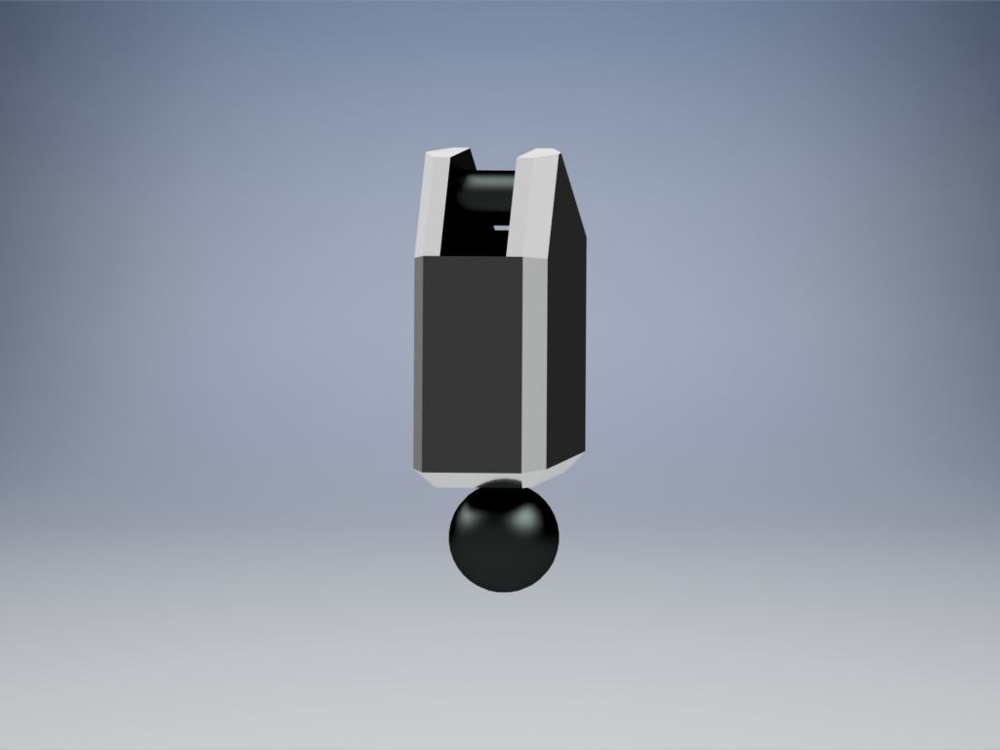

Some time after I started class at Nashua Community College I decided to upgrade the robot
Upgrades for the LFO
After some time after I started class at Nashua Community College I decided to upgrade the robot
The first thing that happened was a change in program
NCC used the program SolidWorks so I moved all the files over to SolidWorks and continued working on the robot there and it became this. The rest of the images will be rendered in Autodesk Inventor because I don't have access to SolidWorks anymore but the parts are still the same as there were to begin with.
I then went to work upgrading and modifying the original pieces.
The very first thing I decided to do was to upgrade the hands. The original hands were the most disappointing feature to me since they were just solid blocks, and even though they looked alright, I did not like them.
I went in and redesigned the hands so that they were fully articulated and used this image as a reference
The very first thing I decided to do was to upgrade the hands. The original hands were the most disappointing feature to me since they were just solid blocks, and even though they looked alright, I did not like them.
The articulation process
The idea of articulating the hand was easy to conceptualize but actually making the hand took some time. What I ended up doing was taking the solid hands I already made and cut off each finger and made them their own parts. After taking off the fingers I went to modifying the palm by placing ball sockets in the palm and trying to find the exact depth to place them took a little trial and error. After that I went back to the fingers and segmented them with a peg and c-clip, and then added the same sized ball to the bottom so that they could all connect. All 4 fingers are actually the same assembly because I decided that it's a robot and it didn't actually need uneven fingers.

This is the results
This is the results
The hand is fully articulated now with a ball socket at the base of each finger and can go into any pose you could think of.
The hand is fully articulated now with a ball socket at the base of each finger and can go into any pose you could think of.
Next I started working on the body and head
I plan on doing another redesign for the head, it's very sharp and angular, and even though it works, I don't care for it too much and want to make one that more resembles an actual head.
Originally the body and head were one piece with the cockpit resembling one of a fighter jet, I liked it but I wanted to make an actual head So I started from scratch, made a new body and design it more like some of the other robots from the show with the cockpit on what was essentially a backpack.
In the end this was the results. I am still proud with the way it turned out.
Next I started working on the body and head
I plan on doing another redesign for the head, it's very sharp and angular, and even though it works, I don't care for it too much and want to make one that more resembles an actual head.
Originally the body and head were one piece with the cockpit resembling one of a fighter jet, I liked it but I wanted to make an actual head So I started from scratch, made a new body and design it more like some of the other robots from the show with the cockpit on what was essentially a backpack.
In the end these were the results. I am proud with the way it turned out.
The last few redesigns were minor and only with only a few things added, like the spike on the lower arm and adding an optional shoulder cannon.
The final product
This is what it ended up as and it's still one of the projects that I have the most pride in, It took months of work for both the initial design and the redesign and though it's little more than a proof of concept I'm proud that I was able to make it at all. None of the parts can actually physically be snapped together with many being a solid tube with no way to fit the connector pieces into them and none of them have any clearance so all the pieces that would go together are the same exact size, essentially making them solid pieces. There's still much left on this project to be done and many upgrades and redesigns are needed. Hopefully one day it will be able to be 3D printed piece by piece and actually snapped together.